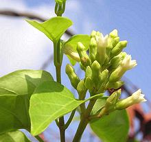
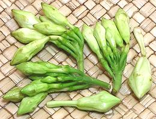
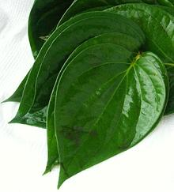
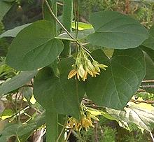
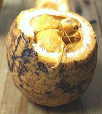
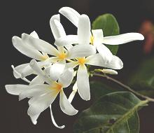
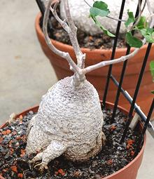
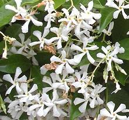
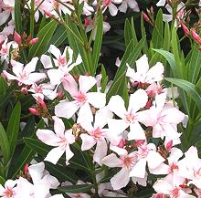
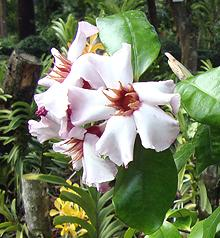

SAFARI
Users
River Leaf

This plant is native to Thailand, Laos, Vietnam and Cambodia. The leaves
are sour, and it's main culinary use is in a Vietnames sour soup called
Cá Kèo, after the goby fish that is used in it. This herb
is not currently available commercially in North America, particularly
because the State of California is highly suspicious of water plants that
can clog irregation chanels. The Vietnamese name of this plant translates
to "River Leaf". It is also used as a medicinal within its range.
Loroco
 [Quilite (indigenous); Fernaldia pandurata]
A vine native to the tropical Americas, Loroco is an important food item in El Salvador and Guatemala. The unopened buds, as shown in the photo, are used for cooking. Markets serving Latino communities here in Los Angeles have these frozen in plastic bags, brined in jars, and, much less commonly, fresh. The photo specimens were fresh, measuring up to 0.42 inch diameter by 1.2 inches long (not counting the stems). The price was 2016 US $10.99 per pound, but they are nearly weightless, so a generous handful cost only $0.55.
The taste raw is a floral sweetness with just a faint hint of
bitterness. The closest thing I remember is squash flowers. Loroco is
used as an herb in salads, rice dishes, stews and sauces. In El Salvador
and Honduras they are used to flavor stuffings for pupusas (stuffed
tortillas). Some say they're a natural aphrodisiac, but I have not
confirmed that. They are best fresh, but the USDA has rated them as
a "Moderate" pest risk, requiring specific measures for importation.
Apparently those measures are being met, because they are becoming
more common in Southern California (2016). Frozen are a reasonable
alternative. They can be grown in home gardens in southern Florida,
but only bloom part of the year there. Roots of this plant are reported
to be highly toxic.
Utazi / Otazi
 [Bush Buck (English); Utazi (Ibo, Ibibo, Efik); Utezi (Edo); Arokeke (Yoruba); Gongronema latifolium]
This climbing shrub belongs to the Milkweed branch of the Dogbane Family,
and is native to West Africa. Its broad, heart shaped leaves are usually
eaten raw as a garnish on salads and the like, but also used in some
soups. It has a somewhat bitter taste, and also has medicinal uses.
Photo borrowed from agriculture site
Surext Deal under fair
use (small format, non-commercial).
Pakalana Vine
 [Creeping Cowslip, Tonkin jasmine, Tonkinese creeper, Chinese Violet, Fragrant Telosma; Dork man ton (Laos); Dok katchon (Thai); Hoa thien li (Viet); Kodi sambangi (Tamil); Telosma cordata]
This plant is native to the tropics and subtropics from Pakistan to
Indonesia and the Philippines, ranging north into southern China. It
is grown as a fragrant decorative in the United States in USDA zones
9a to 11. In Laos and Thailand the flower clusters are used in cooked
salads and soups, also steamed and eaten with a dip. The flower clusters
are picked before they open and look much like Central American Lorico
(see above), but smaller. They are sold commercially and probably can
be found in the frozen food cases of one or more of the large Asian
markets here in Los Angeles. The plant also has medicinal uses.
Photo by KENPEI distributed under license
Creative Commons
Attribution-ShareAlike 3.0 Unported, attribution required.
Madd
 [Saba (Mandinka); Madd (Wlof); Liane Saba (French); Saba senegalensis]
This broad leaved shrub or liana (depending on environment), is common in western tropical Africa, from Senegal to Togo. As a shrub it can have a trunk over 7 inches in diameter, and as a climbing liana it can be up to 130 feet long. Once used to make an inferior rubber, this plant is now highly valued for its fruit.
The oval fruit is quite variable in size, but can be up to 4 x 6
inches. The orange pulp surrounding the large seeds is sweet-sour and
eaten as is or used to make preserves. Its nutrition profile is similar
to citrus. The leaves are used in sauces, condiments and appetizers.
This plant is both cultivated and harvested in the wild.
Photo by Jonas Roux (cropped) distributed under license
Creative Commons
Attribution v2.0 Generic.
Bungo
 [Mbungo; Rubber Vine; Saba comorensis]
This broad leaved liana, growing to 65 feet, is very similar to the closely related Madd (see above), but with a much more extensive range: Somalia to Ethiopia and south to Angola, Zambia, Mozambique and Madagascar. It was once extensively used to produce "Congo Rubber", but the market was taken by sources producing better rubber. It is now valued for its fruit, widely used to make a refreshing drink very popular through its range.
The fruit is very similar to the Madd, except smaller, up to about
2-1/2 inches diameter. The juice made from the fruit has been described
as a combination of mango, orange and pineapple. The plant flowers all
year, and is a popular fruit bearing decorative.
Photo by Bart Wursten (cropped) distributed under license
Creative Commons
Attribution-NonCommercial-ShareAlike 2.0 Generic.
Camaru
 [Water Root; Kambro, Kameroep; Fockea edulis and possibly other Fockea]
Fockea is native to South Africa and Namibia, where its swollen
stems (caudex) have long been used as food. This plant is entirely toxic,
but the swollen stem can be detoxified by cooking. It has a slightly
sweetish flavor and is used to make a sort of jam, as an alternate to
watermelon. The stems can get up to 24 inches in diameter and weigh up
to 22 pounds. It is also a popular succulent decorative and easily
available in North America.
Photo by Amada44 (cropped) distributed under license
Creative Commons
Attribution-ShareAlike 3.0 Unported.
Star Jasmine
 [Confederate Jasmine; Trachelospermum jasminoides]
While this plant grows well throughout the former Confederate States, its
alternate name is actually from the Malay Confederation. This plant,
very common here in Southern California (not a Confederate State), has
no culinary use except as an aromatic planting around the patio. It is,
however, important in manufacture of perfumes and incense, particularly
Chinese and Vietnamese incense.
Oleander
 [Nerium oleander]
This very common plant is native to the western Mediterranean but has
been introduced worldwide. It is particularly seen in Southern California
where it has been heavily planted as nearly indestructible, car absorbing
freeway landscaping. It's only culinary use is for attempting suicide,
usually unsuccessfully. Although it is the most toxic commonly planted
decorative, it's difficult to consume enough of the cardiac glycosides
to do yourself in - but it can be done. Small children should be
discouraged from using the convenient branches for roasting hot dogs.
Strophanthus
 [Strophanthus gratus, other species of genus Strophanthus]
This genus of plants is found mostly in tropical Africa, but some are found in southern India and Southeast Asia. They all have one and only one culinary usage, in the "hunting and gathering" phase of the cuisine - as a powerful arrow poisons. All other uses are medicinal, including treatments for head lice and snake bite. Seeds and other parts contain cardiac glycosides, such as g-strophanthin (Ouabain), k-strophanthin, and e-strophanthin.
Ouabain has been found useful for treating heart failure and angina,
particularly in France and Germany. Its general use for angina declined
due to the plaque theory of heart attacks, but interest is now being
revived, as the plaque theory is partially in doubt. In the USA the
FDA regulates it as and extremely hazardous substance.
Photo by Pinus (cropped) distributed under license
Creative Commons
Attribution-ShareAlike 3.0 Unported.